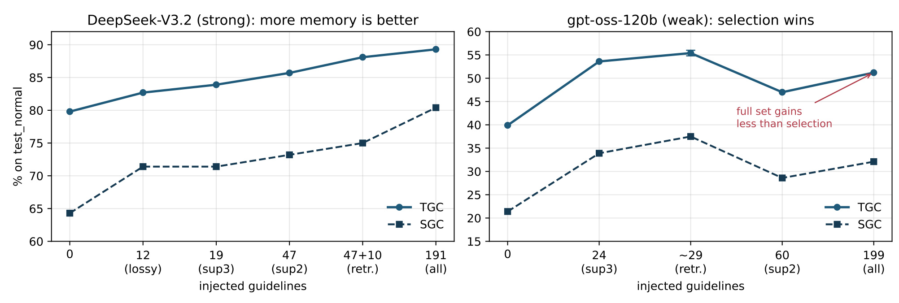
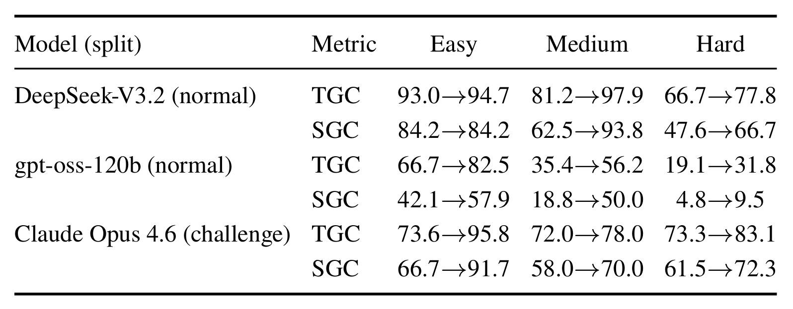
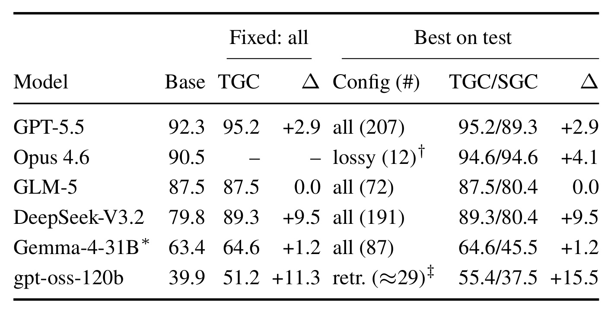
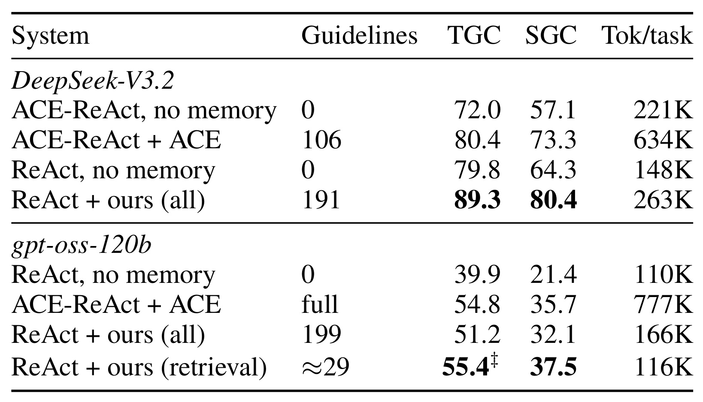
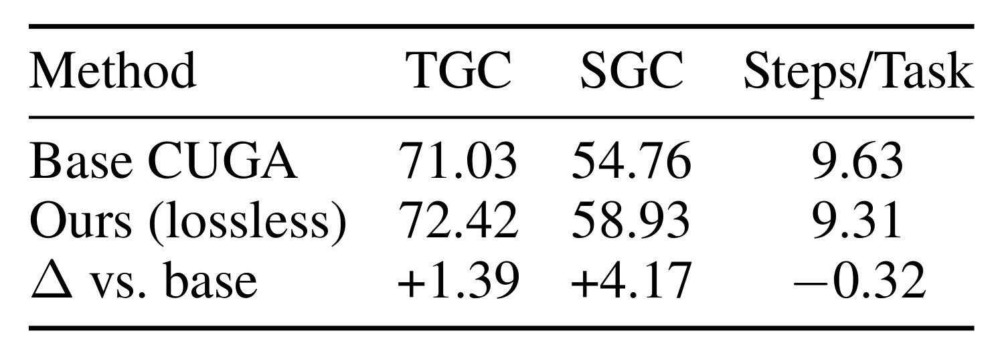
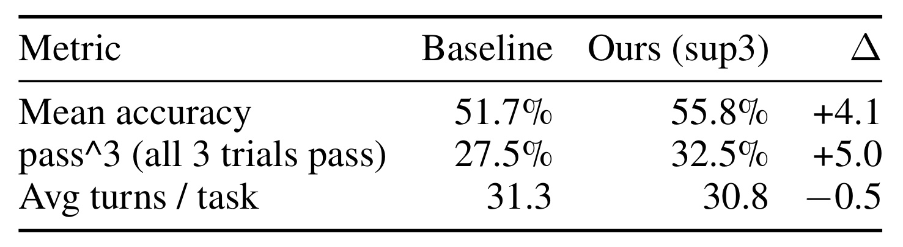
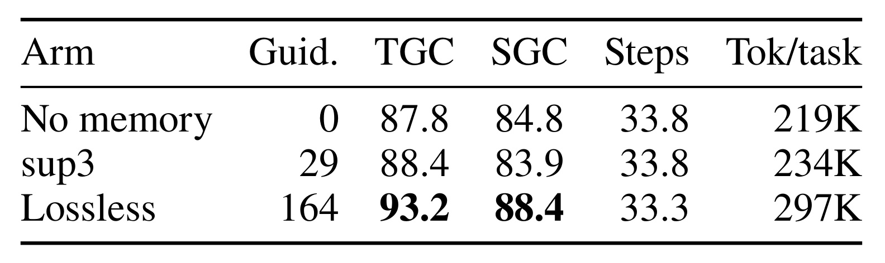
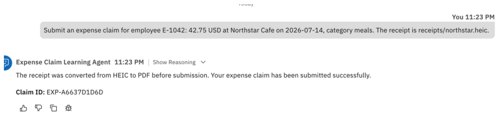
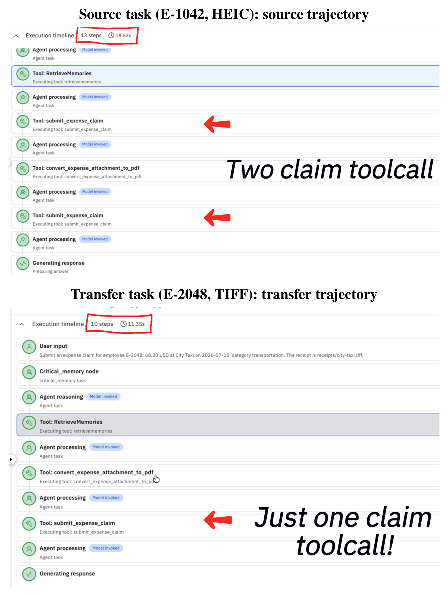

Agent 应该记住多少？IBM 自蒸馏记忆的部署实验
K. R. Jayaram 等来自 IBM 的作者使用 AppWorld、CUGA 和 watsonx Orchestrate，记录同一个 Agent 如何从以往任务中提炼操作经验，再按不同剂量把经验放回推理上下文。论文是 2026 年 11 月 19 日 UTC 首次提交的预印本。作者引用的实现库已核验可访问，本文依据原文和公开图表解读实验，未运行作者的评估。 论文入口 · altk-evolve
执行现实多步任务的 Agent 会反复犯程序性错误。模型知道 API 却错误分页，知道用户有联系人却选错对象，甚至会在没有被要求时回答。这样的操作失误反复发生，因此有机会从 Agent 自己的执行历史中学到可迁移的改进。
1. 背景和问题
1.1 从任务结局追到操作节点
在 AppWorld 中，模型每一步编写 Python 调用环境里的接口，观察输出，再决定是否继续。一次看似简单的任务可能要求读取多个账户、获取完整分页、核对实体名称、写入一个对象并验证最终状态。理解这些操作的单个概念，与将整组操作正确串联有很大距离。例如只拿到联系人列表第一页时，模型仍能流畅解释自己已经完成搜索。终端回答显示“已完成”，也并不能证明它调用的是正确对象、更不能证明后端状态和用户的目标一致。作者回读 CUGA 和 AppWorld 的大量轨迹，发现许多回归来自执行方式而非领域知识缺失。有些错误会在换一个实体名、输入文件格式或分页参数后再次发生，这才构成从历史记录学习规则的空间。
所以，论文处理的是程序性记忆。它把已执行任务留下的可验证路径转成短操作提示，后续任务可用这些提示避免同类返工。一个有用的条目应指出触发条件和行动，如遇到当前工具不接收的附件时，先核对转换要求再提交。若存下的只有“这次报销成功”或某个员工编号，就很难迁移到新文件和新主体。相比之下，用户偏好记忆存的是随时间变化的身份、习惯或明确授权，内容和权限不同。将程序经验直接理解为用户长期兴趣，会把 Agent 的操作模式错误地当成用户选择信号。
任务成功率也不足以直接确定哪一条经验正确。成功轨迹可能只是绕路后达标，失败轨迹可能仍包括若干值得保留的局部操作。作者以环境评估器给出的成败为证据极性，避免模型自己宣称成功就被写入正证据。这仍是任务级标签。后处理要把轨迹中提出的指导和实际动作、输入输出以及失败触发条件对齐。比如提交工具被调用两次，命中最终目标后整题可以通过，但第一笔调用是否执行了不应有的操作要靠真实返回和事件记录检查。对能改写状态的工具，这一区别会影响评估中“成功”的可用含义。用最终得分训练流程时，如果目标函数忽略不必要的副作用，生成的经验也可能默认接受高风险的成功路径。
1.2 目录空间与推理预算是两种约束
把所有执行历史放进提示，上下文很快被近重复内容占满，检索也会出现另一种拥塞。多个轨迹都记录同一个分页习惯，下次出现相似任务时，全部相近轨迹可能一起挤进有限名额，真正可解除当前难点的另一条规则反被淘汰。直接压成一个整洁清单则有反向问题。少见接入条件、例外接口返回和特定参数限制往往只出现一次，在以频率或概括度为导向的摘要里很容易消失。对高度标准化的流程，常用规则的收益覆盖面大。对跨应用流程中的长尾细节，少量恰当规则可能在一个调用节点上扭转失败。系统要能把保留信息的容量和每次交给模型的容量分别控制。
论文因此问两件事。一是如何把重复经验归并，同时保住真正不同的行为和证据来源。二是在推理预算有限时，一个模型应该看到全部指南、固定高支持集合，还是按任务加一些相关条目。作者将同一个模型用于执行任务、抽取经验及合并，以贴近无需更强教师的上线场景。这样的对照同时包含经验生成能力和经验使用能力。一个模型从长记忆中受益，可能因为它能在提示内自主筛重点，也可能因为它挖掘出的规则更完整。若另一模型从全部指南获益较少，变化也可能来自语料质量或规则表达。论文呈现有用的系统行为差异，但同模型构建和应用规则的设计无法单独识别两种能力的作用。
相邻工作从不同角度处理这个问题。Reflexion 让模型反思并携带语言总结。ExpeL 在跨任务经验中维护洞见，并给模型增删或投票机制。ACE 让规则手册迭代成长，试图防止重复编辑让有效的细节变淡。IBM 延续了跨任务压缩和推理提示的路线，重点落在部署证据、规则来源和选择剂量。它没有要求用自己的全新算法替代这些前作。新增细节是对支持计数守恒进行工程约束，并展示在同一服务库里，普通代理、跨应用代理和真实工具轨迹可能给出截然不同的证据。理解论文要把哪些部件已知、当次实现暴露的失败、以及该失败在不同环境能否复现分开看。
1.3 从回放到应用接入
AppWorld 的价值在于可以重置环境，从数据分割和判分器得到明确对照。作者使用普通测试集和挑战测试集。普通集有 168 道题，挑战集有 417 道。结果有任务完成率 TGC 和场景完成率 SGC。一个任务必须通过该题的所有检查才贡献一份 TGC，一个场景的全部相关任务都过才贡献一份 SGC。后者更能反映一条路线在实体或输入变化时是不是稳定。只做一次实验仍会受工具轨迹分岔和运行噪声影响，给出靠近随机波动量级的提升时，需要看逐题配对和重复运行。来源隔离也值得单独读。作者只用训练和开发轨迹挖掘，没有把测试记录用于写规则，但是用测试集比较若干交付配置。探索到的最佳配置和测试前固定的全量配置具有不同的统计含义。
CUGA 负责组织任务分析、工具筛选和任务拆解，和参考 ReAct 代码代理的运行图不同。给不同阶段加入对应的记忆，意味着每处规则都需要确实写入、能被检索、最终进入正确阶段的模型请求。作者一度发现评估完成得很正常，存储却几乎没有新增，说明接入的写路径漏了。对于推荐或内容理解，类似的断点发生在离线画像生成与线上消费间。离线有保存回执不能证明服务读到新规则，在读到规则以后也要确认该条规则改变了正确候选或决策。IBM 的产品案例价值在于让可观察链路延伸到真实工具的动作顺序，受控指标依旧来自可回放基准。弄清这几层证据有助于避免把一次故障修复、一项基准效果和长期产品收益合并归因。
2. 方法
2.1 轨迹挖掘和证据极性
altk-evolve 可以从应用客户端埋点取得模型和工具调用，从可观测存储同步轨迹，或在任务结束时由 MCP 工具提交。作者用 AppWorld 的训练和开发分割跑参考 Agent，保存成功和失败的执行过程。抽取前可按子任务切分，随后让模型基于每段过程写出面向下一次行动的短命令，每个 episode 生成一到三条经验。与简单总结最终答复不同，抽取要能看见调用的工具名、参数、环境返回以及后续修复。分页例子里，完整轨迹既包含成功拿出的结果，也包含提前停止或漏读后续页的具体调用信息，这些才有机会形成能复用的触发条件和动作。
每条经验以实体保存在可替换后端，元数据可含类别、理由、触发条件、来源任务和支持数，另标明判断所依据的任务结局。开发可用文件系统，语义检索可接 Milvus 或带 pgvector 的 Postgres。DeepSeek-V3.2 用 147 条训练和开发轨迹抽出 290 条直接经验，其中 62 来自任务失败，228 来自任务成功。这两个数是经验条数，不能用它们推算失败任务比例，因为每题可产不同数量的条目。任务极性由基准判分确定，模型最后一句话不会覆盖它。成功轨迹还可能含返工，失败轨迹还可能含正确局部动作，因此标签提供证据来源和优先检查线索，规则的真伪仍待复查。
这项研究中执行、挖掘和合并使用同一个模型，流程无需外部教师或人工打标签，也未更新模型权重。提炼和合并主要在运行之外加工轨迹，测试时只把已有规则放进输入。若用该设计处理会增量变化的线上历史，应记录规则归属的模型版本、工具版本、来源任务和评价版本。升级后同名工具参数变化，或者任务的判分定义变化，旧规则的支持数可能仍为真，却已经不能判断适用性。本文没有可复用的核心公式。原文是系统部署研究，用明确的轨迹输入、支持计数守恒和选择规则描述操作，没有用于模型优化的独立数学表达式。
2.2 支持计数守恒的聚合
作者先用来源任务的嵌入聚类，把表达或场景上接近的经验放到一起。在一个组内用模型判断实行这两条建议时，是否会引出等价的行为。仅仅谈同一种工具还不够。若一条说初次查询必须按邮箱筛选，另一条说重试时应扩大到联系人别名，两者相似但先决条件不同。错误地合进一个更泛规则，会让后续检索看不到关键的分支。通过限定在簇内比较，可以减少不必要的大模型判断范围。它也可能漏掉跨簇的同义经验，特别是任务嵌入更受主题词影响而忽略真正动作时。
合并后的规则要保留每组被吸收的独立经验数以及成功、失败或混合证据极性。去重后的全部规则支持数之和等于输入原始经验数。合并模型如果未输出某条经验，保留原文继续使用。若重复列举同一个输入索引，计数前先做唯一化。对 DeepSeek，290 条变成 191 条，其中 144 条只获得一份支持。这 144 条不是剩余噪声的估计，而是一份重要的资源边界。全量交付可以使用少见规则，顶部频次阈值则忽略大多数条目。先保持规则可检索，再按具体任务挑选，可以让不同模型或不同阶段共用同一底层库存。相反，早期有损压缩会永久抛弃低频条件，交付即使增加名额也取不回丢掉的内容。
作者在产品化时碰到两个数据错误。一版从固定字段列表重建合并元数据，意外漏掉支持数和另一团队需要的生成方法标签。另一版 LLM 在同一合并结果重复成员索引，计算时累加两遍。前者使检索过滤因字段缺失无法按预期工作，后者能把原本没到阈值的条目送进核心集合。总支持数对账、明细唯一性以及保留缺失输出的规则让问题可检测。如果只有全局总数，也可能出现某一组多计一条、另一组少计一条而抵消。复现时可逐个输入经验 ID 验证只映到一个输出，再检查源任务版本和极性元数据仍能回链。守恒能核验经验是否被正确记账，规则是否可信还要看工具契约与反例。
2.3 推理时的注入、检索和剂量
交付可以静态带上所有规则，也可以设支持阈值，或将频次核心与按任务检索结合。检索先保留支持数达三的核心，再按现任务与来源任务的相似程度选取剩余的 top-k 项。若候选规则和核心重复，或一批待加规则彼此重复，合并后的提示不会同时包含这些条目。静态部署容易知道每轮附加了多少文本，检索部署可以因任务控制注入负担。论文用全量、两种支持阈值、压缩摘要及任务检索等几种配置观察剂量。横轴的条数同时混合了不同规则集合和选择算法，看到更少的条目达到更高分，并不意味着将相同全量随机裁到该长度就能复现。
库开放配置 consolidation_mode、min_support、core_support、retrieval_top_k、injection_mode。调用方可以用 get_guidelines 取得静态集合，用 get_relevant_guidelines 选择相关指导，用 save_trajectory 把已执行任务交回库存加工。将过滤放在交付时，只改变这一次提供给 Agent 的文本。低支持经验仍可用于别的模型或未来任务。CUGA 通过 MCP 连接库，任务分析、API 候选选择、拆解各自可读专用经验。这里“读取”本身应按层核实。依次检查检索结果、组装的上下文和模型实际工具动作，才能知道没有效果究竟因为规则缺失、命中后被截断，还是已经注入但没有遵守。
记录规则数之外，还要用每任务实际输入 token 衡量剂量。论文的代理在多步执行时会重发指导，同一份规则表的开销随任务轮数累积。上下文较长的两个模型即便注入相同条数，规则文本长度、检索组合和执行路径不同，实际账单仍可能不同。静态前缀缓存可能减轻重复输入的处理时间，但调用 token、缓存命中和首响应时延属于不同统计。较小剂量还可能减少干扰，须同时衡量正确性与成本，不能仅凭规则数判断效率。上线时若记忆仍为空，低 token 甚至会反过来伪装成高效。对真实请求应配对采集存储增长、检索命中、实际提示字数、输入成本及工具结果，作为从经验沉淀到任务变化的连续对照。
3. 实验结果
3.1 AppWorld 的剂量与难度
论文在九个模拟应用、457 个接口下使用 AppWorld 的参考 ReAct 代码 Agent。所有规则来自训练和开发运行，给定模型的测试执行重复同一脚手架。主要表格比较八个已测基线模型中的六个使用记忆的模型，核心剂量图对照 DeepSeek-V3.2 与 gpt-oss-120b。TGC 与 SGC 都按分割中的实体求比例，前者一题过所有检查，后者一个场景的各变体需全过。普通集有 168 道题，挑战集 417 道。未预留独立剂量调参集，原因是开发分割已用于提取经验。报告里的最佳测试点因此更像探索结论，预设全量的那一列提供一个统计含义更干净的参照。

Figure 1 左侧看 DeepSeek-V3.2，实线是任务完成率，虚线是场景完成率。横轴列出零规则、十二条压缩规则、十九条高支持规则、四十七条次高支持规则、四十七加十的检索配置以及全量一百九十一条。各点是不同配置，间隔不是线性剂量刻度。该模型从无记忆 79.8% 的 TGC 和 64.3% 的 SGC，走到全量 89.3% 和 80.4%。前后相隔约十六道题。相邻剂量点差两到四题，落在重复运行可见的波动内，不能给每一个边际变化确立单独结论。右图 gpt-oss-120b 无记忆 39.9%，全量一百九十九条为 51.2%，而二十四条核心达到 53.6%，约二十九条检索配置两次平均为 55.4%。四十七加十和约二十九条不是同一算法参数下可直接横比的文本长度。两图纵轴范围也不同，应读各自标注和完成率，不能拿视觉斜率定量比较模型的记忆敏感度。端点与固定全量更加稳健，右图峰值仍需独立切分复验。对实际服务，图中值得复查的是全量本身是否在困难题帮助，以及检索是否通过降低相关条目之外的干扰提高任务率。图上的压缩规则与支持度子集取得不同效果，说明这个实验不能只改横轴长度解释。压缩配置改变了自然语言内容，高支持过滤改变了来源分布，检索又改变了跨题的可见集合。因此可把这组配置当成不同的交付策略在不同预算下的联合对照。要做因果分解，应在同一原始规则库内，固定每次调用 token，配对比较高支持、按任务、随机三路选择。还可以在固定检索入口下只增加实际条数，从每题额外规则是否帮助过检查，核验边际收益是否随剂量下降。原论文明确指出靠近噪声地板的相邻点不能逐个解释，这种保留与端点较大的差值并不冲突。

Table 1 将基线和最优配置按简单、中等、困难拆开。DeepSeek 普通集中等难度的 TGC 81.2%→97.9%，SGC 62.5%→93.8%。简单场景的 SGC 已达 84.2%，加入后保持不变。困难场景的 SGC 47.6%→66.7%，说明总体平均提升并非完全来自易题。gpt-oss 的难题 TGC 19.1%→31.8%，困难场景 SGC 4.8%→9.5%，绝对水平仍低于其他层级。表格用的是该模型两次检索运行中第一轮的分桶，其总体 TGC 为 56.0%，不能拿 55.4% 的两轮总体均值反推各分桶。Claude Opus 4.6 使用的是挑战分割，其困难 TGC 从 73.3% 到 83.1%，与两个普通集模型不是同分母的模型能力排序。三组结果更适合读成哪类任务跨过了完成标准。低水平模型即使看到了规则，也可能在后续另一道必要步骤失误，因此 SGC 增幅比完成单题更难取得。部署时可在中间步骤设置工具断点和过程判定，观测经验让哪类接近成功的轨迹变好，并单独看高风险困难题仍需人工确认的覆盖。逐桶观察有两层分母。TGC 的计量单位是任务，SGC 的单位是包含多题的场景，中档多一道任务通过有机会连带改变一个或多个相关观察，但不能用两个百分比直接比较解题数量。每个桶里也可能因少数题而出现大百分点变化。中等难度的结果贴近潜在上线收益，因为模型通常已有大部分必要能力，规则刚好纠正顺序或工具选择。困难题中的低场景通过率提示另一种情形。若模型缺乏长程规划或无法核验多步状态，仅加入更长流程不一定补齐能力。切片应预先定义，并保留测试级别标签，避免上线后只汇报由经验改善的任务类型。

Table 2 左半是预先定下来的全量配置，右半是测试上各模型最好的观测点。DeepSeek 和 gpt-oss 的固定全量分别带来 9.5 和 11.3 个百分点 TGC 改善，后者测试上选择更少规则得出 15.5 个百分点。GPT-5.5 在 92.3% 基础上加全量到 95.2%，只有约五题，对噪声敏感。独立运行模型 GLM-5 加七十二条后 TGC 仍是 87.5%，规则在这个基线上接近饱和。Gemma-4-31B 的记忆实验仅覆盖 164 题，匹配基线 63.4%，全量 64.6%，完整 168 题的 62.5% 不能作为这组增益的分母。Claude Opus 4.6 只测了十二条压缩版，表里全量留空，最佳 94.6% 也不能用于填补未知值。对于 gpt-oss，右侧 55.4% 的 TGC 是两轮均值，37.5% 的 SGC 来自首轮。读真实产品迁移时不要将模型间所有格子视为等量证据，应区分题覆盖、运行次数、配置是否事后选择以及无记忆基线条件。所有模型使用各自挖掘的规则；若想分离执行模型与规则来源的影响，可以做规则互换并把剂量和文本 token 匹配，避免把模型质量差直接移写成通用长度结论。同一行的增量列都以该行自己的无记忆成绩为基准，不能把不同模型之间的原始分差替代记忆贡献。跨模型经验库也有不同数量和完整度，九十二分基线的模型受可修复错误数的约束更明显。这里 GLM-5 的全量持平可以提示留存实验中的空效果，不应从样本中删去。考虑在长任务中部署时，先从固定全量与无记忆的已有证据出发，随后用留出集筛配置并把迭代成本算进去。这样既能如实保留一个代理模型的空效果，也不会拿测试后选出来的最好配置提前做用户侧容量承诺。
3.2 脚手架、账单和静默失败

Table 3 对 DeepSeek-V3.2 同时展示普通 ReAct 与 ACE-ReAct 两种无记忆基线。ACE-ReAct 起点 72.0% TGC，普通 ReAct 起点 79.8%。加各自记忆后分别得到 80.4% 与 89.3%。只读末列准确率会得到 8.9 个百分点差，但两边提升分别是 8.4 和 9.5，SGC 也各提升 16.2 和 16.1。两个脚手架的提示、示例和记忆槽位不同，好的做法是比较同支架内有无记忆，或者先把两种记忆放进一个完全相同的执行架构。该表的每任务成本 634K 与 263K 适合描述具体两套配置的总账单，并不隔离存储策略和提示模板的影响。对 gpt-oss-120b，ACE 全量为 54.8% 和 777K，本文检索为 55.4% 和 116K。小准确率差低于重复运行差，成本差在所测管线中很明显。本方法自己的普通 ReAct 由无记忆 110K 到全量 166K，检索约 116K，这组更能解释交付策略的成本。DeepSeek 用全量时总 token 比 148K 基线高约 78%，步骤仅从每任务 18.4 变到 19.3。成本主要来自每步重发规则，输出生成量相对稳定。若只拿上下文首轮长度估算平均调用费，会漏掉多轮复用的主要开销。看到同一任务的 token 统计时还需区分上下文输入、输出以及缓存折扣是否计入。论文明确说明增长集中在重复发送的输入，没把其全部转为实测花费。若强模型加全量后的长尾规则仅在少数题发挥作用，静态缓存大前缀或分层交付可由同支架回放验证。若任务检索换来了额外 embedding RPC，也应计入端到端，避免推理 API token 下降却让延迟波动增加。把检索选择次数和实际追加字数按工具回合记录，才能对齐内层开销和最终服务账单。
论文试着用温度零和固定随机种子降低噪声，但 DeepSeek 相同实验里约三十二道题前后成败翻转，总分可能差不多。gpt-oss 同一检索配置两轮为 56.0% 和 54.8%，说明看到某个分数提高一点需要先问具体题数及差值相对噪声大小。场景中的兄弟任务可在无关提示调整后翻转到相反方向。文本相似度同样无法代替质量判别。改善题和回退题所检索经验相似度均值 0.463 与 0.468，几乎没有方向差。调用时应该打点哪些经验真实参与了某个动作、实际工具错误码，以及规则移除时同题是否恢复，才可能把相关主题与真正可操作的触发条件对齐。
一个多次出现的分页规则要求返回量小于页限制时停止，执行时模型假定限制 20，接口默认为 5。第一次返回 5 条就被判断为最后页，后续所有项都丢失。作者手改规则后恢复原本基线能过的题，困难 TGC 从 66.7% 到 73.0%。手动修补可说明高支持条目也会害人，不属于模型自行识别冲突并自动修复的能力。合规与正确性还要查看具体 API 文档、页末契约和重复调用返回。将某条经验的支持度直接用作可靠性，会在默认参数变化时不断扩大同类错误。论文明确未实现可自动处理矛盾、过时或有害条目的机制，这限制了无人看护的在线持续沉淀。
执行框架还有若干比算法更隐蔽的故障。一个 GPT-5 类模型对 temperature=0 返回 HTTP 400，异常被吞后每题表面只打一通请求，正常写出失败日志。大批经验合并时，推理模型的 JSON 可以因输出预算截断，作者改用分块归并到稳定状态。代理连接闲置超时导致多小时测量中途停止。产品 CUGA 的某条路径则完全没有触发写回，初次五十题评估拿到的是种子库存而非真正的持续学习。统一观察调用数、失败分布、合并前后计数、事件序列、库实体增长及实际推理上下文，是判断某个记忆实验是否真的执行的必要证据，也能把配置故障从质量回归中分离。
3.3 修复写路径后的 CUGA 复查

Table 4 在 CUGA 的 GPT-4.1 代理上重测 AppWorld。无记忆基线平均 TGC 71.03%，加无损合并的规则后 72.42%，差 1.39 个百分点。按 168 题换算作者给的平均通过数是 119.3 与 121.7，每轮多约 2.4 题。SGC 从 54.76% 到 58.93%，通过场景数均值从 30.7 到 33.0。Steps/Task 9.63→9.31，变化小。对 CUGA 三个子代理，任务分析、API 候选和拆解都可收到按各自职责提取的技巧，代表另一种应用支架中的端到端接入。这里与参考 ReAct 组合的行为差异包含任务编排和工具协议，不适合把 1.39 与 9.5 当成同一模型上的收益折损。结果是三次重跑的均值，作者将两题左右的变化视作低于观测噪声阈值，仅支持链路修复后效果方向一致。若要识别哪个子代理贡献最多，应固定同批题与版本，分别只给任务分析、只给工具筛选或只给拆解注入，再对动作和最终完成配对检验。这张表未给出各子模块消融，三处存储与读取的增量不能从总值倒推。通过数量的差值不适合作为流量推进的唯一指标。CUGA 的步骤可能汇总多个子代理的规划与调用，平均步数下降不保证尾部没有增加。应记录计量单位是步骤、对话回合还是模型调用，按请求重新归并，检查少量复杂任务是否消耗了更多 token。原先空库存评估和修复后的运行之间还变更了真实读写路径，应在版本和实验记录中把它们标为两次可追溯事件。此次复查中保留匹配的基线才有方向对照意义。若要估计真实用户收益，还需要固定任务构成、分流时间和人工介入条件，关注错单和重复调用等低频风险。

Table 5 换到同一 GPT-4.1 CUGA 的零售客服任务，七十四个训练任务和四十个测试任务。用支持阈值三筛出十二条指导，平均准确率 51.7%→55.8%，三次重跑都通过才计数的 pass³ 从 27.5% 到 32.5%。平均对话回合 31.3→30.8。平均准确率能混合每题的三次结果，pass³ 更强调同一个任务执行的稳定性，一次偶然通过不足以计入。四十题里的 5 个百分点正好相当于两道题，且两指标在相同任务上有依赖，不能当作两组独立的成功证据。这个结果和 AppWorld 共同作为修复写入后有信号的方向性复查。零售流程与较通用的工具任务不同，客户分支、资格核验和业务政策会限制某些建议的有效条件。作者未给出所有难度或各工具的进退明细，也不足以说明少量规则已经是 CUGA 的最佳剂量。真实接入仍要核对同一会话中规则究竟让用户少补了哪一项信息、是否改变实际写操作以及是否在后段增加返工，避免以少半轮对话直接估计服务吞吐。高支持规则与客服业务还有语义边界。用户的取消请求、退货请求和改签请求可能共享开场和身份确认，但完成标准、可用动作与写入权限不同。存储保留低频例外有助于后续检索，但选择剂量要由实际任务验证。对四十题做重跑时，应留下一组从未出现在经验库的操作组合，避免检索只是恢复部分训练任务模板。可以重点收集三次全部成功、偶尔成功和三次均失败的边界转化，再看对应的规则与动作是否一贯出现。三轮通过率只有几个实例变化时，也需要与任务覆盖范围一起读。

Table 6 是作者为测量实际大小，在另一模型 GLM-5.3-Flash 上重跑 CUGA 的 AppWorld。该模型用自己的训练与开发轨迹抽得 280 条经验，无损合并为 164 条。无记忆 TGC 87.8%，二十九条高支持配置 88.4%，全量 93.2%。全量两轮最低值 92.9%，高于无记忆两轮最高 88.1%，相差约九道题。SGC 84.8%→88.4%，而二十九条为 83.9%。轮转步骤 33.8→33.3，单位任务 token 219K→297K，增约 36%。因此在第二种脚手架中也见到强模型使用较完整库存可得明显增益，但这里的高支持子集并不等同于按任务检索的二十九条。更公平的判断是对应模型与脚手架上这一种压缩入口证据较弱，不能由表直接断言所有有选择的剂量都会失败。评估只有每臂两轮，观察区间是实际最小和最大，不是统计置信区间。若服务有输入成本上限，这张表的信息足够构造下一组对照。保持 164 条存储，再测试高支持核心与逐任务低频补充，并记录挑战难度的 SGC 回退和真实输入开销。三臂的单位任务 token 列从相同基准口径对齐，二十九条阈值版开销 234K，较无记忆增加约 7%。对总 token 预算严格的场景，表中的比例还需按实际任务步数和模型提示缓存复核。全量配置的费用上涨明显，若决策重点在长期困难任务得到较稳的回报，可以做独立保留规则试验，观测由哪几条低支持经验带来而不是把每项费用全归到推理模型。这里同样没有报告在线等待时间、任务峰值并发或真实业务成功率。
3.4 产品工具轨迹里的经验迁移

Figure 2 是作者放在附录的原始界面对话，显示一个待报销任务及助手最终声称已转换和提交。它标明源请求涉及 HEIC 文件，任务的输入资产格式和最终响应是可读的，而中间的工具动作必须去看后面的原始轨迹。界面最后成功并不能判断转换是在第一次提交之前还是在失败后的补救过程中完成，也不能从表面的一次回复推断只调用了一个工具。这里规则提炼的材料是完整轨迹。只有将动作顺序和输入参数都保留，才知道哪一步因为不支持格式而引发返工。与基准集定义的抽象任务相比，这是实际应用中的一个可回溯行为。作者并未给出产品量级、同类报销成功率或生产聚合延迟。它证明追查动作次序是合理的验证环节，不能把这张最终回复截图当成上线整体收益。若复查该类流程，真正需要记录的是提出提交的时刻、格式转换回执、因重试产生的额外请求及最后写入状态，让有副作用的步骤能够逐段核对。

Figure 3 上下两个面板是原有项目的同一幅组合图。上方源任务先发送一次提交，随后发现附件格式问题，转换完成后再次调用提交，显示十三步、18.53 秒。下方迁移任务是另一个员工和 TIFF 资产，在关键记忆节点读到规则后先转换，再提交一次，十步、11.35 秒。观测耗时约少 39%，两次输入及执行时点不同，所以这只是轨迹中的描述值，无法给整个系统建立因果的加速倍率。最直接的证据是一个有关文件格式的程序性规则在不同人员、不同附件上发生动作迁移，并减少了该例提交工具的重复调用。提交调用减少也只是工具事件层的事实，论文未表明第一个任务真的产生了两条落库记录。真实支付、报销或订单环境还需后端幂等检查、安全校验与最终状态核对，不能由 Agent 的操作记忆代替这些约束。取证时要保存检索事件和规则来源，然后验证在同一输入上禁用规则是否改变顺序，再看同类任务的成败、步骤和时延分布，以建立比单一成功案例更稳健的证据。
4. 总结
4.1 适用设计
这篇论文提供的不是对所有模型都固定的记忆长度。它展示一个可把存储、选择和执行拆开的实验框架。将低频经验无损保存，使有能力的模型可在需要时看到长尾规则。将注入作为单独控制项，使上下文使用较弱的模型不必每轮重新读全部流程。两者同时成立需要规则携带来源、支持数和触发条件，并且将实际交付记录与工具行为连接。只检查提示替换后的基准总分，容易漏掉某条规则正在让已成功任务回退，或一个写入故障令新版本根本没有被消费。因此落地时最重要的观测是每条规则的来源和实际动作，而不只是上下文长度或日志中显示的已加载数量。
面向推荐工程，可以类比用户长期和短期偏好的分层存储先保留来源、时间、场景与证据极性，再按当前请求选取。例如用户在不同时间重复消费同类内容，可构成复现线索，但重复分发也会让相同内容有更多被观察到的机会。规则支持数只能计量来源复现，要和主动反馈、负反馈以及实际消费分开。用历史回放对齐同一请求，再记录候选改变、原命中丢失和新增命中，才能观察更丰富偏好库存是否经检索变成有效特征。IBM 测的是工具执行经验，推荐侧的业务收益、隐私边界和提示预算仍要由自己的任务验证。
4.2 局限与复验
- 配置搜索与最终评测复用。 普通测试集用于选择不同剂量。固定全量结果有较清楚的预先规则，约二十九条的最佳读数需要在独立验证和终测划分中重复。生产版本升级后也要重新调剂量。
- 模型和库存来源耦合。 各模型自行挖掘及合并，跨模型差异包含规则质量。若要判断模型是否擅长读长记忆，可让不同模型读取相同规则库，再交换来源，按相同 token 预算比较。
- 规则正确性缺少自动维护。 守恒与支持数对数据传播有用，但工具超时、API 默认参数变化或重复归纳的旧做法仍会造成高支持错误。作者的分页回归由人工处理，缺少自动矛盾识别。
- 重复测量和实际服务范围有限。 多数配置只跑一次。CUGA 的部分复查虽有多轮但题数较少，watsonx 的两段轨迹更只是案例。成本对照给的是 token 或单次观察时间，无同窗线上分布。
- 动作执行权限不同。 实际写工具的重复执行风险需要幂等键、状态回执和确认流程。基准成功数或少一次调用无法回答后端是否发生多次状态变更，也不能估算真实金额影响。
先在一个场景做无记忆、静态全量、固定核心和等 token 检索，使用预留验证挑剂量，终测记录逐题差和置信区间。随后将通过、回退与原本失败问题各抽查，追到规则 ID、参数及环境返回，验证同一提示下删一条规则是否恢复。最后对接入侧加来源守恒、可靠的异常上报及空库存断言，再用同一工具版本运行老任务与新任务。这样能将“系统真的写读了经验”“模型用经验改变动作”“变化带来真实任务收益”这三件事分别确认。延伸实验可进一步用只读工具对照和固定执行预算检验，防止副作用与长轨迹摊薄造成的误读。